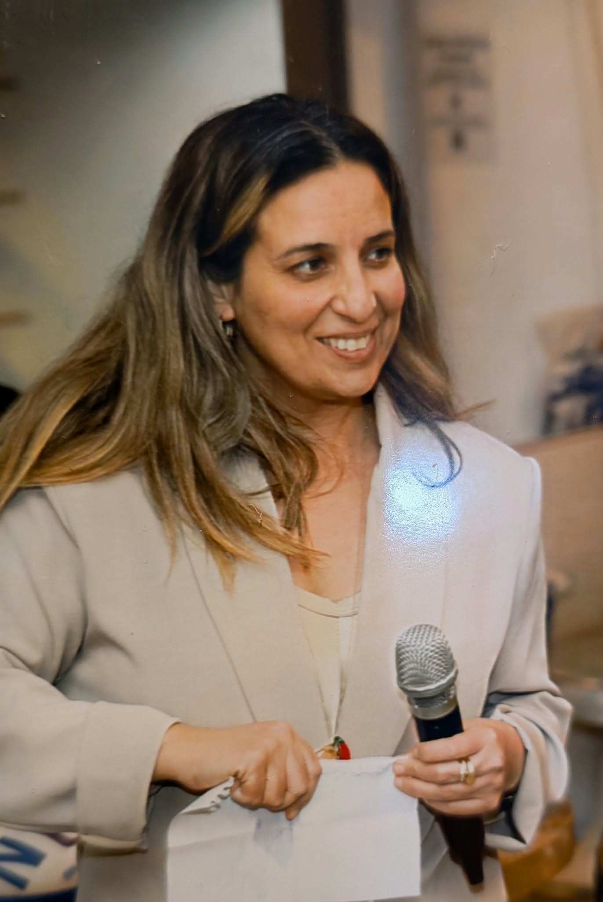

מחפשים שותפים לפיילוט
בשבילי הצחוק
סדנת סטנדאפ בליווי רגשי למתמודדי סרטן בשלב השיקום.
הסדנה מעניקה כלים יצירתיים-נרטיביים בעלי אופי תרפויטי להתמודדות עם האבחנה ועם תהליך השיקום. במהלך 11 מפגשים המשתתפים לומדים לכתוב את סיפורם בכלים מעולם הסטנדאפ, ובסיום מציגים את הקטע שכתבו במופע בפני משפחה וחברים.
הסדנה
סטנדאפ וליווי רגשי, יחד
בשבילי הצחוק מציע סדנת סטנדאפ קבוצתית בליווי רגשי. הסדנה נבנתה על ידי צוות רב-תחומי, ותועבר במשותף על ידי סטנדאפיסט ואיש מקצוע בתחום הנפש.
הצורך
אחרי הטיפול הפעיל
לפי דוח הוועדה הרב-מקצועית לתכנון מערך שירותי האונקולוגיה והרדיותרפיה בישראל, משרד הבריאות (יולי 2025), מדי שנה מאובחנים בישראל כ-30,000 חולי סרטן חדשים. בסוף 2021 חיו בישראל 98,813 אנשים שאובחנו עם סרטן חודרני בחמש השנים שקדמו לכך. אחת מהמלצות הוועדה היא פיתוח שירותים לשלב שלאחר הטיפול הפעיל.
איך התחלנו

כאחות אונקולוגית פגשתי מטופלים בשלבים שונים של ההתמודדות. בלטו החשש להכביד על המשפחה, והצורך לפגוש אנשים בהתמודדות דומה. יחד עם עו״ס מצוות בית החולים הקמתי קבוצת תמיכה למטופלים עם סרטן המוח. היה צורך אמיתי במפגש, וגם קושי לשתף ולהיחשף לקשיים של אחרים. בסופו של דבר השהיתי את המפגשים.
שנה לאחר מכן השתתפתי בקורס סטנדאפ. חברי הקבוצה כתבו וסיפרו סיפורים אישיים, מורכבים ולא פעם כואבים, והתגובה הייתה חיבוק, חום, צחוק וקבלה. שם התחברו הנקודות: מה אם נקיים קבוצת סטנדאפ למתמודדים אונקולוגיים? המודל לוקח את הטוב משני העולמות, הליווי הנפשי והסטנדאפ, בסדנה משולבת שמנחים מטפל רגשי וסטנדאפיסט.
המתח שבין הכאב לפאנץ' קצת מתפוגג ברגע שמגיע הצחוק. יש משהו מאוד משחרר בזה שאתה מספר על אירוע כואב, הופך אותו לבדיחה, ואז מקבל מהקהל סוג של תיקוף: "זה בסדר. מותר לצחוק על זה." פתאום החוויה כבר לא יושבת רק אצלך כמשהו כבד ומפחיד, אלא הופכת למשהו שאפשר להחזיק, לשתף ואפילו ליהנות ממנו
העדות תתווסף כאן.
מי אנחנו
המייסדים
מה הסדנה מבקשת
מטרות, ומה נשאר ביד
- קהילה תומכת.
- ארגז כלים מעולם הסטנדאפ להתבוננות ולמסגור מחדש של רגשות וחוויות קשות.
- קטע סטנדאפ אישי כתוב, פרי עטו של המשתתף.
- גשר לתקשורת מקרבת עם משפחה וחברים.
- מופע סיום על במה מקצועית, מול משפחה וחברים.
בפועל
איך הסדנה בנויה
- למי
- מטופלים שסיימו את שלב הטיפולים הפעיל, ונמצאים בשיקום, בהחלמה ובחזרה לשגרה.
- משתתפים
- עד 12, כדי לאפשר דינמיקה קבוצתית, ביטוי אישי וליווי מקצועי ורגשי.
- מפגשים
- 11 מפגשים, כולל המופע המסכם.
- משך
- שעתיים (120 דקות) לכל מפגש.
- אופי
- קבוצתי ופרונטלי. מי שלא יוכל להגיע יוכל להצטרף בזום, לשמירה על רציפות.
- הפיילוט
- אזור המרכז, ינואר 2027.
תוכנית
אחד־עשר מפגשים
- 1
מה זה סטנדאפ
מה מייחד כתיבה קומית לעומת כתיבה אחרת. הסיפור שלי והקול שלי.
- 2
מנגנונים קומיים
יסודות הכתיבה הקומית: מרעיון, ממחשבה ומסיפור לפאנץ'. מטרגדיה לקומדיה.
- 3
יסודות כתיבת הסטנדאפ
לחשוב ולכתוב סטנדאפ: טיימינג וקצב. החיים מצחיקים, אז צוחקים?
- 4
אמנות ה-Storytelling
איך מספרים סיפור בסטנדאפ: מה אני רוצה לספר, למי ולמה.
- 5
לחבר את הנקודות
מאנקדוטות לקטע, וראנינג גאגס. מסגור מחדש של הסיפור שלי.
- 6
כל העולם במה
הדמות שלי בחיים ועל הבמה, נוכחות בימתית והגשה. מסע הגיבור.
- 7
אני והקהל
הסטנדאפיסט והקהל: תגובות ואלתורים. אלתור והומור ככלי להתמודדות בחיים.
- 8
התמודדות עם לחץ
כלים למעמד המופע המסכם, וכלים רגשיים ללחץ, לחרדה ולהתרגשות.
- 9
מוכנים?
שכתובים אחרונים, תיקונים ותרגול. פנים שונות למסוגלות.
- 10
המופע המסכם
הצגת התוצרים בפני משפחה וחברים, על במת סטנדאפ מקצועית.
- 11
לכל זמן ועת לכל חפץ
מפגש רפלקציה לסיכום התהליך וחוויית המופע. סגירה ועוגנים להמשך הדרך.
מרחב בטוח
היבטים אתיים ובטיחותיים
- אישור רפואי להשתתפות בסדנה ובמופע.
- שיחות התאמה לפני תחילת הסדנה.
- נוהל סודיות בקבוצה.
- הסכמה מדעת להשתתפות, והסכמה נפרדת לצילום, להקלטה ולפרסום.
- הזכות שלא להיחשף ושלא לדבר על הסרטן.
- הזכות שלא להשתתף במופע הסיום, או להשתתף בדרכים חלופיות.
- הסדנה אינה תחליף לטיפול רפואי או נפשי.
שותפות
איך אפשר לשתף פעולה
הפיילוט יתקיים באזור המרכז, בינואר 2027. נשמח לשבת יחד ולמצוא את מסלול השותפות שמתאים לכם.
השותפים שלנו יקבלו
- הכרה כשותפים בחומרי המיזם, במופע הסיום וברשתות החברתיות.
- הרצאה לעובדים מטעם צוות המיזם: «החיים מצחיקים, אז צוחקים».
- דוח תוצאות ותובנות מהפיילוט.
- שותפות בפיתוח מודל שניתן להרחיב למרכזים רפואיים נוספים בארץ.
- הזמנה למופע התוצרים של המשתתפים.
יצירת קשר
נשמח לשבת יחד
כתבו מי אתם, ואיזה מסלול שותפות מתאים לכם: מימון, עמותת חסות, מחקר, הפצה או אירוח.